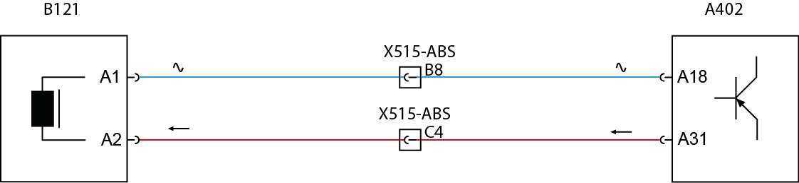

 
B121 - Sensor de velocidade traseiro
esquerdo.
X515-ABS - Interface ABS.
A402 - Módulo ABS.
Descrição da Falha
Circuito do sensor de velocidade do eixo traseiro esquerdo, sensor incorreto ou montagem incorreta.
Indicação de Falha
Luz de alerta da central acende constantemente com o símbolo  com o veículo andando ou parado. com o veículo andando ou parado.
Estratégia de Monitoramento
O
módulo ABS monitora a velocidade de rotação das rodas através da frequência do sinal do sensor de velocidade da roda.
Efeito da Falha
A
funcionalidade elétrica do sistema ABS é feita automaticamente e caso
seja detectada alguma anomalia, uma luz de advertência acende-se no
painel de instrumentos e o sistema ABS ficará inoperante parcialmente ou integralmente.
Possíveis Falhas
FMI 02: Implausível.
FMI 03: Curto para o positivo.
FMI 04: Circuito aberto ou em curto para o negativo.
FMI 08: Frequência anormal.
FMI 14: Sensor incorreto ou montagem incorreta
Aviso
 O
ajuste de posicionamento do sensor em relação à roda dentada, ocorrerá
automaticamente no primeiro movimento da roda de acordo com a excentricidade do rolamento da roda, porém não poderá
ultrapassar a 0,6 mm. O
ajuste de posicionamento do sensor em relação à roda dentada, ocorrerá
automaticamente no primeiro movimento da roda de acordo com a excentricidade do rolamento da roda, porém não poderá
ultrapassar a 0,6 mm.
Registros de Falhas em Outros Módulos de Comando
Não.
Considerar os esquemas elétricos do veículo
| Verificação
| Medição
| Eliminação da Falha
|
Sensor de rotação/Módulo ABS
|
Continuidade do circuito: - Módulo ABS pino A18 para o B8 da Interface ABS.
- Interface ABS pino B8
para o A1 do sensor de rotação de roda.
- Módulo ABS pino A31 para o C4
da Interface ABS.
- Interface ABS
pino C4 para o A2 do sensor de rotação de roda.
Meça a resistência da bobina do
sensor:
- Entre o pino A1 e A2 deve haver entre 1,7
Kohms à 1,9 Kohms.
|
- Verifique se há acúmulo de limalhas de ferro na face do sensor de rotação ou
na roda dentada.
– Verifique os cabos quanto à rompimento ou fios
expostos.
– Verifique as conexões quanto a mau contato ou pino torto.
– Caso nenhuma falha seja verificada, substitua o sensor de velocidade.
- Caso nenhuma falha seja verificada, substitua o Módulo ABS.
|
|